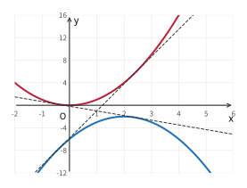
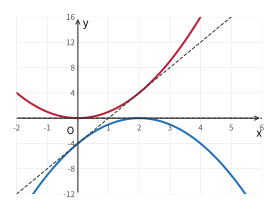
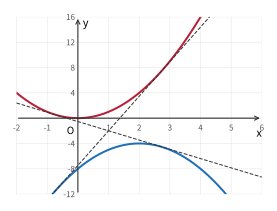

ホーム ＞ 数学II ＞ 微分法（接線・増減・極値）
別冊練習問題 8 の解答 2つの放物線の共通接線
(1) 2つの放物線 \(y=x^2\) と \(y=-x^2+4x-6\) の共通接線の方程式をすべて求めよ。
接線を一般に
\(y=x^2\) の点 \((t,t^2)\) での接線 \(y=2tx-t^2\)。

もう一方にも接する
\(y=-x^2+4x-6\) の点 \(u\) での接線 \(y=(-2u+4)x+u^2-6\)。係数を比べて
\[2t=-2u+4,\qquad -t^2=u^2-6\]解く
\[\text{接線：}\quad y=- 2 \sqrt{2} x + 2 x - 3 + 2 \sqrt{2},\quad y=2 x + 2 \sqrt{2} x - 3 - 2 \sqrt{2}\]
【答案】
\[y=- 2 \sqrt{2} x + 2 x - 3 + 2 \sqrt{2},\ y=2 x + 2 \sqrt{2} x - 3 - 2 \sqrt{2}\]答
(2) 2つの放物線 \(y=x^2\) と \(y=-x^2+4x-4\) の共通接線の方程式をすべて求めよ。
接線を一般に
\(y=x^2\) の点 \((t,t^2)\) での接線 \(y=2tx-t^2\)。

もう一方にも接する
\(y=-x^2+4x-4\) の点 \(u\) での接線 \(y=(-2u+4)x+u^2-4\)。係数を比べて
\[2t=-2u+4,\qquad -t^2=u^2-4\]解く
\[\text{接線：}\quad y=0,\quad y=4 x - 4\]
【答案】
\[y=0,\ y=4 x - 4\]答
(3) 2つの放物線 \(y=x^2\) と \(y=-x^2+4x-8\) の共通接線の方程式をすべて求めよ。
接線を一般に
\(y=x^2\) の点 \((t,t^2)\) での接線 \(y=2tx-t^2\)。

もう一方にも接する
\(y=-x^2+4x-8\) の点 \(u\) での接線 \(y=(-2u+4)x+u^2-8\)。係数を比べて
\[2t=-2u+4,\qquad -t^2=u^2-8\]解く
\[\text{接線：}\quad y=- 2 \sqrt{3} x + 2 x - 4 + 2 \sqrt{3},\quad y=2 x + 2 \sqrt{3} x - 4 - 2 \sqrt{3}\]
【答案】
\[y=- 2 \sqrt{3} x + 2 x - 4 + 2 \sqrt{3},\ y=2 x + 2 \sqrt{3} x - 4 - 2 \sqrt{3}\]答